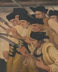

Povstanie 1848
Povstanie 1848 je interaktívny exponát pre Múzeum Slovenských Národných Rád v dome Anny Koléniovej v meste Myjava. Návštevník si tu môže vyskúšať úlohu dobrovoľníka v Slovenskom povstaní v roku 1848 - pomáhať s prípravami na boj, verbovať dobrovoľníkov, nadväzovať dimplomatické vzťahy a radiť sa s Ľudovítom Štúrom, Michalom Miloslavom Hodžom a Jozefom Miloslavom Hurbanom. Príbeh je doplnený maľbami, grafikami a fotografiami zo zbierok Slovenských galérií.
Povstanie 1848 vytvoril lab.SNG pre Slovenské národné múzeum pri príležitosti 150. výročia vzniku Slovenskej národnej rady. Pomocou príbehu, ktorý návštevník ovplyvňuje svojimi rozhodnutiami, približuje historický kontext revolučných rokov 1848 - 1849 a udalosti vedúce k boju Slovákov o samostatnosť v rámci Uhorska.
Exponát bol vytvorený pomocou online platformy Twine. Príbeh je založený na historických udalostiach a využíva primárne literárne zdroje a archívne materiály. Scenár imituje dobový štýl reči a písania.
Vytvoril lab.SNG
- Scenár: Katarína Fitková
- Vývoj: Philo van Kemenade
- Grafický dizajn: Martin Pyšný
- Produkcia: Michal Čudrnák, Lukáš Štepanovský, Gabriel Balkó
Použité diela
Zdroje výtvarných diel
- Slovenská národná galéria
- Galéria mesta Bratislavý
- Východoslovenská galéria
- Slovenské národné múzeum
-
Neznámy fotograf
Fotografia, časti starej Myjavy, rínok s kostolom, 1900 - 1918
Slovenské národné múzeum - Múzeum Slovenských národných rád v Myjave -
Gejza Angyal
Dievča vo dverách
Stredoslovenská galéria, SGB G 5179 -
Ivan Žabota
Dievča v kroji, 1914
Slovenská národná galéria, SNG O 3516 -
Felicián Moczik
Vnútro dedinskej izby, 1902
Slovenská národná galéria, SNG O 3229 -
 Štefan Bednár
Štefan Bednár
Myjavský motív, 1939
Slovenská národná galéria, SNG O 5661 -
Eduard Ballo
Vnútro dedinskej izby, 1895
Liptovská galéria Petra Michala Bohúňa, GPB O 56 -
Martin Benka
Izba z Ratiškoviec, 1916
Slovenská národná galéria, SNG O 6640 -
Ľudovít Pitthordt
Záhradný motív, 1905 - 1910
Slovenská národná galéria, SNG O 5700 -
Gejza Szilassy
Lesnatá krajina, 1850 – 1855
Východoslovenská galéria, VSG O 134 -
Stredoeurópsky autor z 1. polovice 19. storočia
V hostinci, 1800 - 1825
Galéria mesta Bratislavy, GMB A 3562 -
Alexander Brodszky
Vnútro lesa so skalami, 1845 – 1860
Slovenská národná galéria, SNG O 357 -
Peter Michal Bohúň
Oravskí zemania vo väzení, 1848 - 1855
Slovenská národná galéria, SNG O 2417 -
Gabriel Klimkovič
Vojenské cvičenie dobrovoľníkov, po 1850
Galéria umenia Ernesta Zmetáka, GNZ K 234 -
Johann Wilhelm Frey
Lanerov dom vo Viedni, 1870 – 1890
Galéria mesta Bratislavy, GMB A 5896 -
Peter Michal Bohúň
Ján Francisci ako kapitán slovenských dobrovoľníkov, 1849 – 1850
Slovenská národná galéria, SNG O 5301 -
Vincenz Katzler
Boj, 1848
Galéria mesta Bratislavy, GMB C 4069 -
Janko Alexy
Slovenskí povstalci, okolo 1928
Slovenská národná galéria, SNG O 5736